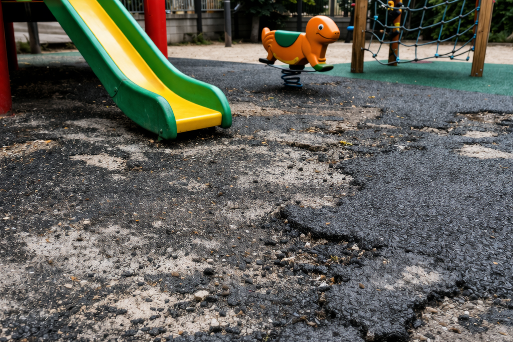
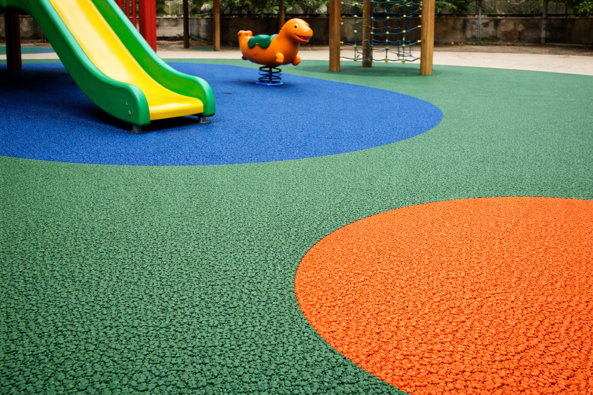

<!doctype html>
<html lang="ko">
  <head>
    <meta charset="UTF-8" />
    <meta name="viewport" content="width=device-width, initial-scale=1.0" />
    <title>보수대장 | 탄성포장재보수전문회사</title>
    <meta
      name="description"
      content="보수대장은 탄성포장재 보수 전문 회사로 부분보수부터 전체 재시공까지 현장 상황에 맞는 최적의 해결책을 제공합니다."
    />
    <script src="https://cdn.tailwindcss.com"></script>
    <style>
      html { scroll-behavior: smooth; }
      body { font-family: Pretendard, Apple SD Gothic Neo, Noto Sans KR, system-ui, sans-serif; }
      .section-title { letter-spacing: -0.02em; }
    </style>
  </head>
  <body class="bg-white text-slate-900">
    <div id="app"></div>

    <script>
      const detailPages = [
        {
          slug: 'rubber-double-layer',
          title: '고무칩 복층포장',
          subtitle: '어린이 놀이터 · 유치원 · 학교시설',
          hero: './photo1.png',
          summary: '충격 흡수성과 안전성을 고려한 복층 구조 포장 방식으로 어린이 놀이터, 유치원, 학교 시설 등에 적합한 시공 솔루션입니다.',
          points: ['상부와 하부를 분리한 복층 구조로 탄성과 내구성 확보', '어린이 활동 공간에 적합한 충격 완화 성능', '색상 구성과 패턴 적용이 쉬워 디자인 연출 가능'],
          images: ['./detail_replaced_fix.png', './detail_replaced_fix2.png', './d_rd_03.png'],
          applications: ['어린이 놀이터', '유치원 실외공간', '학교 놀이시설', '근린공원 놀이구역'],
          process: ['손상 범위 및 하부 상태 점검', '부분 절개 또는 전체 면 정리', '하부 보강 및 접착 처리', '상부 칩 마감 및 색상 보정'],
          faq: [
            { q: '부분보수도 가능한가요?', a: '가능합니다. 손상 범위, 기존 포장 상태, 색상 편차 여부를 확인한 뒤 부분보수 또는 구간 재시공으로 진행할 수 있습니다.' },
            { q: '기존 바닥과 색 차이가 많이 나나요?', a: '노후도에 따라 차이는 있을 수 있으나 최대한 기존 톤에 맞춰 보수 방향을 안내드립니다.' },
          ],
        },
        {
          slug: 'rubber-single-layer',
          title: '고무칩 단층포장',
          subtitle: '산책로 · 보행로 · 체육시설',
          hero: './photo2.png',
          summary: '경제성과 시공 효율을 고려한 단층 포장으로 산책로, 보행로, 각종 체육시설 주변 공간에 폭넓게 적용할 수 있습니다.',
          points: ['비용 효율이 높고 유지보수가 편리한 구조', '보행 동선과 야외 활동 공간에 적합', '현장 용도에 따라 두께 및 마감 조정 가능'],
          images: ['./d_rs_01.png', './d_rs_02.png', './d_rs_03.png'],
          applications: ['아파트 산책로', '공원 보행로', '체육시설 주변', '휴게공간 연결동선'],
          process: ['현장 상태 및 배수 확인', '들뜸·균열 부위 정리', '기초면 접착 처리', '단층 포설 및 마감'],
          faq: [
            { q: '단층포장은 어디에 많이 쓰이나요?', a: '산책로, 보행로, 야외 운동시설 주변처럼 경제성과 시공 효율이 중요한 구간에 많이 적용됩니다.' },
            { q: '부분보수 후 사용은 언제 가능한가요?', a: '현장 온도와 습도에 따라 다르지만 일반적으로 양생 시간을 고려해 사용 가능 시점을 안내드립니다.' },
          ],
        },
        {
          slug: 'polyurethane-sports',
          title: '폴리우레탄 체육시설',
          subtitle: '육상트랙 · 다목적구장 · 학교체육시설',
          hero: './photo3.png',
          summary: '육상트랙, 다목적구장, 학교 체육시설에 적합한 전문 바닥 시스템으로 운동 성능과 내구성을 함께 고려한 시공입니다.',
          points: ['운동 특성에 맞춘 탄성 및 마찰 성능 확보', '학교 및 공공체육시설에 폭넓게 적용 가능', '기존 바닥 상태에 맞춘 보수 또는 재시공 가능'],
          images: ['./d_pu_01.png', './d_pu_02.png', './d_pu_03.png'],
          applications: ['학교 운동장', '육상트랙', '다목적구장', '공공 체육시설'],
          process: ['기존 바닥 열화 상태 진단', '균열·들뜸 부위 절삭 및 보수', '탄성층·마감층 시공', '라인마킹 및 최종 점검'],
          faq: [
            { q: '라인마킹까지 가능한가요?', a: '가능합니다. 트랙 또는 구장 라인마킹까지 포함한 시공 구성이 가능합니다.' },
            { q: '기존 우레탄 바닥 위에 바로 가능한가요?', a: '바닥 상태에 따라 다릅니다. 박리, 균열, 수분 상태를 확인한 뒤 부분보수 또는 재시공 범위를 결정합니다.' },
          ],
        },
        {
          slug: 'coating-floor',
          title: '도막형 바닥재',
          subtitle: '미끄럼방지 · 경사로 · 주차장',
          hero: './photo4.png',
          summary: '도막형 바닥재는 미끄럼 저항성과 내구성을 높여 주차장, 진출입로, 경사로 등 다양한 공간에 적용할 수 있는 실용적인 솔루션입니다.',
          points: ['미끄럼방지 성능 강화', '주차장 및 경사로 환경에 적합', '현장 환경에 따라 다양한 마감 선택 가능'],
          images: ['./d_cf_01.png', './d_cf_02.png', './d_cf_03.png'],
          applications: ['주차장 경사로', '지하주차장', '출입구 구간', '미끄럼 위험 구역'],
          process: ['오염 제거 및 면처리', '프라이머 도포', '도막층 시공', '논슬립 마감 및 건조'],
          faq: [
            { q: '차량 통행이 많은 곳도 가능한가요?', a: '가능합니다. 통행량과 하중 조건을 고려해 적합한 사양으로 안내드립니다.' },
            { q: '미끄럼방지 성능은 어느 정도인가요?', a: '현장 용도에 따라 입자감과 마감 사양을 조정해 보행 안정성을 높일 수 있습니다.' },
          ],
        },
        {
          slug: 'cork-color-sand',
          title: '코르크포장 / 칼라규사',
          subtitle: '산책로 · 놀이터 · 휴게공간',
          hero: './photo5.png',
          summary: '자연스러운 질감과 다양한 색상 표현이 가능한 포장 방식으로 산책로, 놀이터, 휴게공간 등 경관과 기능을 함께 고려하는 공간에 적합합니다.',
          points: ['경관 친화적인 자연스러운 연출 가능', '다양한 색상과 질감 구현 가능', '보행 공간 및 휴게 공간에 적합'],
          images: ['./d_cc_01.png', './d_cc_02.png', './d_cc_03.png'],
          applications: ['공원 산책로', '놀이터 주변', '단지 휴게공간', '조경 연계 구간'],
          process: ['현장 패턴 및 색상 협의', '기초면 정리', '소재 포설 및 마감', '경계부 디테일 정리'],
          faq: [
            { q: '디자인 패턴 적용도 가능한가요?', a: '가능합니다. 색상 분할, 경계 라인, 공간 성격에 맞는 패턴 구성이 가능합니다.' },
            { q: '유지관리는 어렵지 않나요?', a: '일반적인 야외 유지관리 범위 내에서 관리 가능하며, 현장에 맞는 관리 방법도 함께 안내드립니다.' },
          ],
        },
        {
          slug: 'epoxy-polyurea',
          title: '에폭시 / 폴리우레아',
          subtitle: '공장바닥 · 주차장 · 산업시설',
          hero: './photo6.png',
          summary: '에폭시와 폴리우레아 바닥 시스템은 공장, 창고, 주차장 등 고강도 내구성과 유지관리 효율이 중요한 공간에 적합합니다.',
          points: ['내마모성과 내오염성이 우수한 바닥 시스템', '산업 현장과 주차장 환경에 적합', '사용 목적에 따라 다양한 사양 적용 가능'],
          images: ['./d_ep_01.png', './d_ep_02.png', './d_ep_03.png'],
          applications: ['공장 내부', '물류창고', '지하주차장', '산업설비 구간'],
          process: ['하부면 수분 및 균열 점검', '연삭·청소 등 바탕면 정리', '프라이머 및 중도 시공', '상도 마감 및 보호층 처리'],
          faq: [
            { q: '오염에 강한가요?', a: '현장 조건과 사용 목적에 맞는 사양 선택 시 유지관리 효율을 높일 수 있습니다.' },
            { q: '부분보수도 가능한가요?', a: '가능합니다. 다만 기존 도막의 상태와 색상, 박리 범위에 따라 시공 방식이 달라집니다.' },
          ],
        },
        {
          slug: 'loess-soil-concrete',
          title: '황토포장 / 흙콘크리트',
          subtitle: '산책로 · 광장 · 공원공간',
          hero: './photo7.png',
          summary: '자연 친화적인 분위기를 조성하는 포장 방식으로 산책로, 광장, 공원 공간 등에 어울리는 바닥 솔루션입니다.',
          points: ['자연스러운 색감과 분위기 연출', '공원 및 광장 등 외부 공간에 적합', '현장 여건에 따라 다양한 시공 방식 적용 가능'],
          images: ['./d_lc_01.png', './d_lc_02.png', './d_lc_03.png'],
          applications: ['근린공원', '광장 보행로', '자연학습장', '테마 산책구간'],
          process: ['지반 상태 및 배수 계획 확인', '기초면 정리 및 레벨 조정', '포설 및 압착', '표면 정리 및 양생 관리'],
          faq: [
            { q: '경관형 공간에 잘 어울리나요?', a: '자연스러운 색감과 질감이 강점이라 공원, 광장, 조경 연계 공간에 잘 어울립니다.' },
            { q: '배수 조건도 중요하나요?', a: '네. 외부 공간은 배수와 지반 상태가 매우 중요해 현장 확인 후 시공 방향을 잡습니다.' },
          ],
        },
        {
          slug: 'chemical-tennis-court',
          title: '케미칼 테니스코트',
          subtitle: '아크릴 하드코트',
          hero: './photo8.png',
          summary: '케미칼 테니스코트는 균일한 구질과 안정적인 경기 환경을 제공하는 아크릴 하드코트 방식으로 각종 테니스 시설에 적합합니다.',
          points: ['일정한 표면 상태와 경기 성능 확보', '학교, 체육시설, 공공 코트에 적합', '기존 코트 보수 및 재도장 대응 가능'],
          images: ['./d_tc_01.png', './d_tc_02.png', './d_tc_03.png'],
          applications: ['학교 테니스코트', '체육센터 코트', '공공시설 코트', '클럽 구장'],
          process: ['기존 코트 표면 진단', '크랙 보수 및 레벨 정리', '아크릴 시스템 도장', '라인마킹 및 완성 점검'],
          faq: [
            { q: '기존 코트 색상 변경도 가능한가요?', a: '가능합니다. 기존 상태와 마감 사양에 따라 재도장 또는 보수 후 변경이 가능합니다.' },
            { q: '경기 성능도 고려되나요?', a: '네. 표면 균일성, 마찰감, 탄성 등 사용 목적에 맞는 코트 품질을 고려해 시공합니다.' },
          ],
        },
        {
          slug: 'artificial-turf',
          title: '인조잔디포장',
          subtitle: '각종 체육시설 · 야외활동공간',
          hero: './photo9.png',
          summary: '각종 체육시설과 야외 활동 공간에 적합한 인조잔디 포장으로 관리 효율과 활용도를 함께 높일 수 있습니다.',
          points: ['다양한 체육시설에 적용 가능한 범용성', '유지관리 효율이 높고 시각적 완성도가 우수', '사용 목적에 맞춘 규격과 충진재 구성 가능'],
          images: ['./d_at_01.png', './d_at_02.png', './d_at_03.png'],
          applications: ['풋살장', '학교 운동공간', '야외 체육공간', '다목적 활동구역'],
          process: ['기초면 평활도 확인', '하부 정리 및 배수 확인', '잔디 포설 및 접합', '충진재 시공 및 정리'],
          faq: [
            { q: '보수만도 가능한가요?', a: '가능합니다. 접합부 벌어짐, 일부 마모, 충진재 상태 등을 확인한 뒤 보수 범위를 안내드립니다.' },
            { q: '체육용과 일반용이 다른가요?', a: '네. 용도에 따라 파일 길이, 밀도, 충진재 구성 등 사양이 달라질 수 있습니다.' },
          ],
        },
      ];

      const quickStats = [
        { label: '부분보수 대응', value: '가능' },
        { label: '현장 맞춤 제안', value: '1:1' },
        { label: '시공 범위', value: '소량 ~ 전체' },
        { label: '대표 문의', value: '031-511-8454' },
      ];

      let lightboxImages = [];
      let lightboxIndex = 0;
      let pendingScrollTarget = 'home';

      function escapeHtml(str) {
        return String(str)
          .replace(/&/g, '&amp;')
          .replace(/</g, '&lt;')
          .replace(/>/g, '&gt;')
          .replace(/"/g, '&quot;')
          .replace(/'/g, '&#039;');
      }

      function navLinks(isDetail = false) {
        const classes = isDetail ? 'text-sm font-medium text-slate-600 hover:text-slate-900' : 'text-sm font-medium hover:text-gray-500';
        return [
          ['company', '기업정보'],
          ['products', '제품소개'],
          ['photos', '시공사진'],
          ['colorchart', '색견표'],
          ['library', '자료실'],
          ['estimate', '견적문의'],
        ].map(([id, label]) => `<button onclick="goSection('${id}')" class="${classes}">${label}</button>`).join('');
      }

      function detailView(detail) {
        const related = detailPages.filter(item => item.slug !== detail.slug).slice(0, 3);
        return `
        <div class="min-h-screen bg-white text-slate-900">
          <header class="sticky top-0 z-50 border-b bg-white/95 backdrop-blur">
            <div class="mx-auto flex max-w-7xl items-center justify-between gap-4 px-6 py-4">
              <button onclick="goHome()" class="text-left">
                <div class="text-xl font-bold">보수대장</div>
                <div class="text-xs text-gray-500">탄성포장재보수전문회사</div>
              </button>
              <nav class="hidden items-center gap-6 md:flex">
                ${navLinks(true)}
              </nav>
              <button onclick="goHome()" class="rounded-2xl border border-slate-300 px-4 py-2 text-sm font-semibold text-slate-700 transition hover:bg-slate-50">홈으로 돌아가기</button>
            </div>
          </header>

          <section class="relative overflow-hidden border-b bg-slate-950 text-white">
            
            <div class="absolute inset-0 bg-gradient-to-r from-slate-950 via-slate-950/85 to-slate-900/50"></div>
            <div class="relative mx-auto grid max-w-7xl gap-10 px-6 py-20 md:grid-cols-[1.1fr_0.9fr] md:py-28">
              <div class="max-w-3xl">
                <div class="inline-flex rounded-full border border-white/20 bg-white/10 px-4 py-1 text-sm text-white/90">${detail.subtitle}</div>
                <h1 class="mt-5 text-4xl font-bold leading-tight md:text-6xl">${detail.title}</h1>
                <p class="mt-6 text-base leading-8 text-white/80 md:text-lg">${detail.summary}</p>
                <div class="mt-8 flex flex-wrap gap-3">
                  <button onclick="goSection('estimate')" class="inline-flex min-h-12 items-center justify-center rounded-2xl bg-white px-6 py-3 text-sm font-semibold text-slate-900">상담 문의하기</button>
                  <button onclick="goSection('products')" class="inline-flex min-h-12 items-center justify-center rounded-2xl border border-white/30 px-6 py-3 text-sm font-semibold text-white">다른 공법 보기</button>
                </div>
              </div>

              <div class="grid gap-4 self-end rounded-[2rem] border border-white/10 bg-white/10 p-6 backdrop-blur-sm">
                <div>
                  <div class="text-sm font-semibold text-white/70">적용 장소</div>
                  <div class="mt-3 flex flex-wrap gap-2">
                    ${detail.applications.map(item => `<span class="rounded-full border border-white/15 bg-white/10 px-3 py-1 text-sm text-white/90">${item}</span>`).join('')}
                  </div>
                </div>
                <div class="grid grid-cols-2 gap-3 pt-4">
                  ${quickStats.map(stat => `
                    <div class="rounded-2xl border border-white/10 bg-black/10 px-4 py-4">
                      <div class="text-xs text-white/60">${stat.label}</div>
                      <div class="mt-1 text-base font-semibold text-white">${stat.value}</div>
                    </div>`).join('')}
                </div>
              </div>
            </div>
          </section>

          <section class="mx-auto max-w-7xl px-6 py-20">
            <div class="grid gap-8 lg:grid-cols-[1.1fr_0.9fr]">
              <div>
                <div class="text-sm font-semibold text-slate-500">POINT</div>
                <h2 class="section-title mt-3 text-3xl font-bold md:text-4xl">이 공법이 필요한 이유</h2>
                <div class="mt-8 grid gap-4">
                  ${detail.points.map((point, index) => `
                    <div class="rounded-[1.75rem] border border-slate-200 bg-slate-50 px-5 py-5">
                      <div class="text-xs font-bold tracking-[0.2em] text-slate-400">POINT 0${index + 1}</div>
                      <div class="mt-2 text-sm leading-7 text-slate-700">${point}</div>
                    </div>`).join('')}
                </div>
              </div>

              <div class="rounded-[2rem] border border-slate-200 p-8 shadow-sm">
                <div class="text-sm font-semibold text-slate-500">FIELD GUIDE</div>
                <h3 class="mt-3 text-2xl font-bold">현장 상담 시 확인하는 항목</h3>
                <div class="mt-6 grid gap-3 text-sm text-slate-700">
                  <div class="rounded-2xl bg-slate-50 px-4 py-4">기존 바닥의 들뜸, 균열, 마모 여부</div>
                  <div class="rounded-2xl bg-slate-50 px-4 py-4">부분보수 가능 범위와 전체 재시공 필요 여부</div>
                  <div class="rounded-2xl bg-slate-50 px-4 py-4">배수 상태, 하부면 강도, 사용 목적</div>
                  <div class="rounded-2xl bg-slate-50 px-4 py-4">색상, 패턴, 사용 일정에 맞춘 시공 계획</div>
                </div>
                <div class="mt-6 rounded-[1.5rem] bg-slate-900 px-5 py-5 text-sm leading-7 text-white/80">
                  사진만으로도 1차 상담이 가능하며, 실제 진행 시에는 현장 상태에 따라 보수 범위와 시공 방식이 달라질 수 있습니다.
                </div>
              </div>
            </div>
          </section>

          <section class="bg-slate-50 py-20">
            <div class="mx-auto max-w-7xl px-6">
              <div class="flex flex-col gap-3 md:flex-row md:items-end md:justify-between">
                <div>
                  <div class="text-sm font-semibold text-slate-500">PROCESS</div>
                  <h2 class="section-title mt-3 text-3xl font-bold md:text-4xl">진행 과정</h2>
                </div>
                <div class="text-sm leading-7 text-slate-600">현장 여건에 따라 일부 단계는 조정될 수 있으며, 보수 범위와 자재 사양은 상담 후 확정됩니다.</div>
              </div>
              <div class="mt-10 grid gap-5 md:grid-cols-4">
                ${detail.process.map((step, index) => `
                  <div class="rounded-[2rem] border border-slate-200 bg-white p-6 shadow-sm">
                    <div class="text-sm font-bold text-slate-400">STEP ${index + 1}</div>
                    <div class="mt-3 text-base font-semibold text-slate-900">${step}</div>
                  </div>`).join('')}
              </div>
            </div>
          </section>

          <section class="mx-auto max-w-7xl px-6 py-20">
            <div>
              <div class="text-sm font-semibold text-slate-500">GALLERY</div>
              <h2 class="section-title mt-3 text-3xl font-bold md:text-4xl">상세 이미지</h2>
            </div>
            <div class="mt-10 grid items-stretch gap-6 md:grid-cols-3">
              ${detail.images.map((img, index) => `
                <button onclick="openLightbox('${detail.slug}', ${index})" class="overflow-hidden rounded-[2rem] bg-white text-left shadow-sm ring-1 ring-slate-200 transition hover:-translate-y-1 hover:shadow-lg">
                  
                  <div class="flex items-center justify-between p-4">
                    <div>
                      <div class="text-sm font-semibold text-slate-800">${detail.title}</div>
                      <div class="mt-1 text-xs text-slate-500">상세 이미지 ${index + 1}</div>
                    </div>
                    <div class="rounded-full bg-slate-100 px-3 py-1 text-xs font-semibold text-slate-600">확대보기</div>
                  </div>
                </button>`).join('')}
            </div>
          </section>

          <section class="bg-white py-20">
            <div class="mx-auto max-w-7xl px-6">
              <div class="grid gap-8 lg:grid-cols-[0.95fr_1.05fr]">
                <div class="rounded-[2rem] border border-slate-200 bg-slate-50 p-8">
                  <div class="text-sm font-semibold text-slate-500">APPLICATION</div>
                  <h2 class="section-title mt-3 text-3xl font-bold md:text-4xl">추천 적용 공간</h2>
                  <div class="mt-6 flex flex-wrap gap-3">
                    ${detail.applications.map(item => `<div class="rounded-full bg-white px-4 py-2 text-sm font-medium text-slate-700 shadow-sm ring-1 ring-slate-200">${item}</div>`).join('')}
                  </div>
                </div>
                <div>
                  <div class="text-sm font-semibold text-slate-500">FAQ</div>
                  <h2 class="section-title mt-3 text-3xl font-bold md:text-4xl">자주 묻는 질문</h2>
                  <div class="mt-8 grid gap-4">
                    ${detail.faq.map(item => `
                      <div class="rounded-[1.75rem] border border-slate-200 p-6">
                        <div class="text-base font-semibold text-slate-900">Q. ${escapeHtml(item.q)}</div>
                        <div class="mt-3 text-sm leading-7 text-slate-600">${escapeHtml(item.a)}</div>
                      </div>`).join('')}
                  </div>
                </div>
              </div>
            </div>
          </section>

          <section class="bg-slate-900 py-20 text-white">
            <div class="mx-auto max-w-7xl px-6">
              <div class="flex flex-col gap-10 lg:flex-row lg:items-end lg:justify-between">
                <div class="max-w-2xl">
                  <div class="text-sm font-semibold text-white/60">CONTACT</div>
                  <h2 class="section-title mt-3 text-3xl font-bold md:text-4xl">현장 사진과 함께 문의주시면<br />더 빠르게 상담해드립니다.</h2>
                  <p class="mt-5 text-sm leading-7 text-white/75">손상 부위 사진, 대략적인 면적, 현장 위치를 함께 보내주시면 부분보수 가능 여부를 더 빠르게 안내드릴 수 있습니다.</p>
                </div>
                <div class="flex flex-wrap gap-3">
                  <a href="tel:0315118454" class="inline-flex min-h-12 items-center justify-center rounded-2xl bg-white px-6 py-3 text-sm font-semibold text-slate-900">전화 상담</a>
                  <button onclick="goSection('estimate')" class="inline-flex min-h-12 items-center justify-center rounded-2xl border border-white/20 px-6 py-3 text-sm font-semibold text-white">문의 정보 보기</button>
                </div>
              </div>

              <div class="mt-12 grid gap-6 md:grid-cols-3">
                ${related.map(item => `
                  <button onclick="openDetail('${item.slug}')" class="overflow-hidden rounded-[2rem] border border-white/10 bg-white/5 text-left transition hover:bg-white/10">
                    
                    <div class="p-5">
                      <div class="text-lg font-semibold">${item.title}</div>
                      <div class="mt-1 text-sm text-white/60">${item.subtitle}</div>
                    </div>
                  </button>`).join('')}
              </div>
            </div>
          </section>
        </div>`;
      }

      function homeView() {
        return `
        <div class="min-h-screen bg-white text-slate-900">
          <header class="sticky top-0 z-50 border-b bg-white/95 backdrop-blur">
            <div class="mx-auto flex max-w-7xl items-center justify-between px-6 py-4">
              <button onclick="goHome()" class="text-left">
                <div class="text-xl font-bold">보수대장</div>
                <div class="text-xs text-gray-500">탄성포장재보수전문회사</div>
              </button>
              <nav class="hidden items-center gap-8 md:flex">
                ${navLinks(false)}
              </nav>
            </div>
          </header>

          <section id="home" class="relative overflow-hidden border-b">
            
            <div class="absolute inset-0 bg-gradient-to-r from-white/78 via-white/68 to-white/52"></div>
            <div class="relative mx-auto max-w-7xl px-6 py-20 md:py-32">
              <div class="grid gap-12 lg:grid-cols-[1.05fr_0.95fr] lg:items-end">
                <div class="max-w-3xl">
                  <div class="inline-flex rounded-full border border-slate-200 bg-white px-4 py-2 text-sm font-semibold text-slate-700 shadow-sm">부분보수부터 전체 재시공까지</div>
                  <h1 class="section-title mt-6 text-4xl font-bold leading-tight md:text-6xl">손상된 탄성포장재를<br />빠르고 정확하게 복원합니다</h1>
                  <p class="mt-6 max-w-2xl text-base leading-8 text-gray-600 md:text-lg">보수대장은 탄성포장재 보수 전문 회사로 부분보수부터 전체 재시공까지 현장 상황에 맞는 최적의 해결책을 제공합니다.</p>
                  <div class="mt-8 flex flex-wrap gap-3">
                    <button onclick="goSection('estimate')" class="inline-flex min-h-12 items-center justify-center rounded-2xl bg-slate-900 px-6 py-3 text-sm font-semibold text-white shadow-sm transition hover:-translate-y-0.5">상담 문의하기</button>
                    <button onclick="goSection('products')" class="inline-flex min-h-12 items-center justify-center rounded-2xl border border-slate-300 bg-white/90 px-6 py-3 text-sm font-semibold text-slate-700 transition hover:bg-white">공법 살펴보기</button>
                  </div>
                </div>

                <div class="grid grid-cols-2 gap-4 sm:grid-cols-4 lg:grid-cols-2">
                  ${quickStats.map(stat => `
                    <div class="rounded-[1.75rem] border border-white/60 bg-white/90 p-5 shadow-sm backdrop-blur">
                      <div class="text-xs font-semibold tracking-[0.18em] text-slate-400">INFO</div>
                      <div class="mt-3 text-lg font-bold text-slate-900">${stat.value}</div>
                      <div class="mt-1 text-sm text-slate-500">${stat.label}</div>
                    </div>`).join('')}
                </div>
              </div>

              <div class="mt-12 grid grid-cols-2 gap-3 sm:grid-cols-3 lg:grid-cols-5">
                ${detailPages.map(item => `
                  <button onclick="openDetail('${item.slug}')" class="group relative overflow-hidden rounded-3xl border border-white/70 bg-white/85 text-left shadow-md backdrop-blur transition hover:-translate-y-1 hover:shadow-lg">
                    <div class="aspect-[4/3] w-full overflow-hidden">
                      
                    </div>
                    <div class="absolute inset-x-0 bottom-0 bg-gradient-to-t from-black/75 to-transparent px-4 py-4">
                      <div class="text-sm font-semibold text-white sm:text-base">${item.title}</div>
                      <div class="text-xs text-gray-200">${item.subtitle}</div>
                    </div>
                  </button>`).join('')}
              </div>
            </div>
          </section>

          <section class="mx-auto max-w-7xl px-6 py-20">
            <div class="grid gap-6 md:grid-cols-3">
              ${[
                ['부분보수 가능', '기존 바닥 전체 철거 없이도 손상 구간 중심으로 보수 방향을 안내합니다.'],
                ['현장 맞춤 시공', '노후도, 사용 환경, 예산에 맞춰 공법과 범위를 제안합니다.'],
                ['빠른 대응 상담', '사진만으로도 1차 상담이 가능해 진행 속도를 높일 수 있습니다.'],
              ].map(([title, desc]) => `
                <div class="rounded-[2rem] border border-slate-200 bg-slate-50 p-7">
                  <div class="text-lg font-semibold text-slate-900">${title}</div>
                  <p class="mt-3 text-sm leading-7 text-slate-600">${desc}</p>
                </div>`).join('')}
            </div>
          </section>

          <section class="bg-slate-50 py-20">
            <div class="mx-auto max-w-7xl px-6">
              <div class="grid gap-12 lg:grid-cols-[0.9fr_1.1fr] lg:items-center">
                <div>
                  <div class="text-sm font-semibold text-slate-500">BEFORE / AFTER</div>
                  <h2 class="section-title mt-3 text-3xl font-bold md:text-4xl">보수 전후를 비교해보세요</h2>
                  <p class="mt-5 text-sm leading-7 text-slate-600">현장 상태에 따라 보수 범위는 달라지지만, 들뜸·균열·마모가 진행된 구간도 적절한 시공 방향으로 개선할 수 있습니다.</p>
                  <div class="mt-8 grid gap-4 text-sm text-slate-700">
                    <div class="rounded-2xl bg-white px-5 py-4 shadow-sm ring-1 ring-slate-200">손상 원인 진단 → 보수 범위 설정 → 시공 진행 → 마감 점검</div>
                    <div class="rounded-2xl bg-white px-5 py-4 shadow-sm ring-1 ring-slate-200">사진, 면적, 현장 위치를 전달주시면 초기 상담이 더 빠르게 진행됩니다.</div>
                  </div>
                </div>

                <div class="grid gap-6 md:grid-cols-2">
                  <div>
                    
                    <p class="mt-3 text-sm font-medium text-gray-500">Before · 손상 및 노후 구간 확인</p>
                  </div>
                  <div>
                    
                    <p class="mt-3 text-sm font-medium text-gray-500">After · 보수 완료 후 마감 상태</p>
                  </div>
                </div>
              </div>
            </div>
          </section>

          <section class="mx-auto max-w-7xl px-6 py-20">
            <div class="flex items-end justify-between gap-6">
              <div>
                <div class="text-sm font-semibold text-slate-500">PROCESS</div>
                <h2 class="section-title mt-3 text-3xl font-bold md:text-4xl">작업 과정</h2>
              </div>
            </div>
            <div class="mt-10 grid gap-6 md:grid-cols-4">
              ${['현장 확인 및 상태 점검', '보수 방법 안내 및 견적', '전문 시공 진행', '완료 후 점검 및 마무리'].map((step, i) => `
                <div class="rounded-[2rem] border border-slate-200 p-6 text-center shadow-sm">
                  <div class="mx-auto flex h-12 w-12 items-center justify-center rounded-full bg-slate-900 text-lg font-bold text-white">${i + 1}</div>
                  <div class="mt-4 text-sm font-semibold text-slate-800">${step}</div>
                </div>`).join('')}
            </div>
          </section>

          <section class="mx-auto max-w-7xl px-6 py-20" id="products">
            <div class="flex flex-col gap-3 md:flex-row md:items-end md:justify-between">
              <div>
                <div class="text-sm font-semibold text-slate-500">PORTFOLIO</div>
                <h2 class="section-title mt-3 text-3xl font-bold md:text-4xl">제품소개 / 공법안내</h2>
              </div>
              <div class="text-sm leading-7 text-slate-600">각 공법 카드를 클릭하면 단일 상세 템플릿 페이지에서 자세한 설명과 이미지를 확인할 수 있습니다.</div>
            </div>
            <div class="mt-10 grid gap-6 md:grid-cols-3">
              ${detailPages.map(item => `
                <button onclick="openDetail('${item.slug}')" class="flex h-full w-full flex-col overflow-hidden rounded-[2rem] border border-slate-200 bg-white text-left align-top shadow-sm transition hover:-translate-y-1 hover:shadow-lg">
                  <div class="block aspect-[16/9] w-full overflow-hidden bg-slate-100">
                    
                  </div>
                  <div class="flex flex-1 flex-col p-5">
                    <div class="text-lg font-semibold" style="letter-spacing:0;word-spacing:0">${item.title}</div>
                    <div class="mt-1 text-sm text-slate-500" style="letter-spacing:0;word-spacing:0">${item.subtitle}</div>
                    <p class="mt-3 flex-1 text-sm leading-7 text-slate-600">${item.summary}</p>
                    <div class="mt-4 inline-flex w-fit rounded-full bg-slate-100 px-3 py-1 text-xs font-semibold text-slate-600" style="letter-spacing:0;word-spacing:0">상세보기</div>
                  </div>
                </button>`).join('')}
            </div>
          </section>

          <section id="company" class="bg-gray-100 py-20">
            <div class="mx-auto max-w-7xl px-6">
              <div class="text-sm font-semibold text-slate-500">COMPANY</div>
              <h2 class="section-title mt-3 text-3xl font-bold md:text-4xl">기업정보</h2>
              <div class="mt-10 grid gap-8 md:grid-cols-2">
                <div class="rounded-[2rem] bg-white p-8 shadow-sm">
                  <h3 class="text-xl font-semibold">회사 소개</h3>
                  <p class="mt-4 text-sm leading-7 text-slate-600">보수대장은 탄성포장재 보수와 재시공을 중심으로 다양한 야외 및 체육시설 바닥 공사를 수행하는 전문 회사입니다. 현장 상태에 맞는 합리적인 공법을 제안하고, 부분보수부터 전체 재정비까지 유연하게 대응합니다.</p>
                </div>
                <div class="rounded-[2rem] bg-white p-8 shadow-sm">
                  <h3 class="text-xl font-semibold">주요 업무</h3>
                  <p class="mt-4 text-sm leading-7 text-slate-600">부분보수, 전체 재포장, 체육시설 바닥 보수, 에폭시·폴리우레아 공사, 인조잔디 및 특수 포장 시공을 진행합니다. 사진 상담과 현장 확인을 통해 맞춤형 견적을 안내합니다.</p>
                </div>
              </div>
            </div>
          </section>

          <section id="photos" class="mx-auto max-w-7xl px-6 py-20">
            <div class="text-sm font-semibold text-slate-500">GALLERY</div>
            <h2 class="section-title mt-3 text-3xl font-bold md:text-4xl">시공사진</h2>
            <div class="mt-10 grid gap-6 md:grid-cols-3">
              <div class="grid gap-6 md:grid-cols-2">
                <div class="rounded-[2rem] bg-white p-4 shadow-sm ring-1 ring-slate-200">
                  <div class="mb-3 text-sm font-semibold text-slate-500">보수 전</div>
                  <button onclick="openStandaloneLightbox(0)" class="block w-full overflow-hidden rounded-[1.5rem]">
                    
                  </button>
                </div>
                <div class="rounded-[2rem] bg-white p-4 shadow-sm ring-1 ring-slate-200">
                  <div class="mb-3 text-sm font-semibold text-slate-500">보수 후</div>
                  <button onclick="openStandaloneLightbox(1)" class="block w-full overflow-hidden rounded-[1.5rem]">
                    
                  </button>
                </div>
              </div>
            </div>
          </section>

          <section id="colorchart" class="bg-slate-50 py-20">
            <div class="mx-auto max-w-7xl px-6">
              <div class="text-sm font-semibold text-slate-500">COLOR</div>
              <h2 class="section-title mt-3 text-3xl font-bold md:text-4xl">색견표</h2>
              <div class="mt-10 grid gap-6 md:grid-cols-4">
                ${['./m_01.png', './m_02.png', './m_03.png', './m_04.png'].map((img, index) => `
                  <div class="overflow-hidden rounded-[2rem] bg-white shadow-sm ring-1 ring-slate-200">
                    
                    <div class="p-4 text-sm font-medium text-slate-700">색견표 ${index + 1}</div>
                  </div>`).join('')}
              </div>
            </div>
          </section>

          <section id="library" class="mx-auto max-w-7xl px-6 py-20">
            <div class="text-sm font-semibold text-slate-500">LIBRARY</div>
            <h2 class="section-title mt-3 text-3xl font-bold md:text-4xl">자료실</h2>
            <div class="mt-10 grid gap-4 md:grid-cols-3">
              ${[
                ['카탈로그', '제품 카탈로그, 공법 소개 자료 연결 가능'],
                ['시험성적서', '성적서 PDF 또는 이미지 파일 연결 가능'],
                ['시공자료', '현장 사진, 시방서, 안내문 등 추가 가능'],
              ].map(([title, desc]) => `
                <div class="rounded-[2rem] border border-slate-200 p-6">
                  <div class="text-lg font-semibold">${title}</div>
                  <p class="mt-3 text-sm leading-7 text-slate-600">${desc}</p>
                </div>`).join('')}
            </div>
          </section>

          <section id="estimate" class="bg-slate-900 py-20 text-white">
            <div class="mx-auto max-w-7xl px-6">
              <div class="grid gap-10 lg:grid-cols-[0.95fr_1.05fr] lg:items-center">
                <div>
                  <div class="text-sm font-semibold text-white/60">CONTACT</div>
                  <h2 class="section-title mt-3 text-3xl font-bold md:text-4xl">소량시공 견적문의</h2>
                  <p class="mt-5 text-sm leading-7 text-white/75">전화, 이메일, 현장 사진을 통해 상담이 가능합니다. 손상 부위 사진과 대략적인 면적을 함께 전달해주시면 보다 빠르게 안내드릴 수 있습니다.</p>
                </div>
                <div class="grid gap-4 text-sm md:grid-cols-3">
                  <div class="rounded-2xl border border-white/10 bg-white/5 px-5 py-5">
                    <div class="text-white/60">전화</div>
                    <div class="mt-2 font-semibold">031-511-8454</div>
                  </div>
                  <div class="rounded-2xl border border-white/10 bg-white/5 px-5 py-5">
                    <div class="text-white/60">이메일</div>
                    <div class="mt-2 font-semibold">esenc@naver.com</div>
                  </div>
                  <div class="rounded-2xl border border-white/10 bg-white/5 px-5 py-5">
                    <div class="text-white/60">주소</div>
                    <div class="mt-2 font-semibold">경기도 구리시 체육관로 137-8 미래타워</div>
                  </div>
                </div>
              </div>
            </div>
          </section>

          <section class="mx-auto max-w-7xl px-6 py-20">
            <div class="mb-16">
              <div class="text-sm font-semibold text-slate-500">MAP</div>
              <h2 class="section-title mt-3 text-3xl font-bold md:text-4xl">오시는 길</h2>
              <div class="mt-8 flex h-80 w-full items-center justify-center rounded-[2rem] border bg-slate-100 p-6 text-center text-slate-600">
                <div>
                  카카오 지도 링크는 보안 정책 때문에 일반 iframe에 바로 표시되지 않을 수 있습니다.<br />
                  아래 버튼으로 카카오맵에서 위치를 확인하세요.<br /><br />
                  <a href="https://map.kakao.com/link/search/경기도%20구리시%20체육관로%20137-8%20미래타워" target="_blank" rel="noopener noreferrer" class="inline-flex min-h-12 items-center justify-center rounded-2xl bg-yellow-400 px-6 py-3 text-sm font-semibold text-slate-900">카카오맵으로 위치 보기</a>
                </div>
              </div>
            </div>

            <div class="border-t pt-6 text-center text-xs leading-6 text-gray-500">
              <div>상호 : 보수대장 | 대표 : 홍길동</div>
              <div>사업자등록번호 : 123-45-67890</div>
              <div>주소 : 경기도 구리시 체육관로 137-8 미래타워</div>
              <div>TEL : 031-511-8454 | FAX : 031-511-8455 | 이메일 : esenc@naver.com</div>
              <div class="mt-2">COPYRIGHT © 보수대장 ALL RIGHTS RESERVED.</div>
            </div>
          </section>

          <a href="tel:0315118454" class="fixed bottom-4 left-1/2 z-50 -translate-x-1/2 rounded-full bg-red-600 px-6 py-4 text-sm font-semibold text-white shadow-xl md:hidden">📞 031-511-8454 전화상담</a>
        </div>`;
      }

      function getHomeSectionFromHash(hash) {
        const sectionIds = ['home', 'company', 'products', 'photos', 'colorchart', 'library', 'estimate'];
        return sectionIds.includes(hash) ? hash : 'home';
      }

      function scrollToSection(sectionId, immediate = false) {
        const target = document.getElementById(sectionId);
        if (!target) return;
        target.scrollIntoView({ behavior: immediate ? 'auto' : 'smooth', block: 'start' });
      }

      function render() {
        const hash = window.location.hash.replace('#', '');
        const app = document.getElementById('app');

        if (hash.startsWith('detail/')) {
          const slug = hash.replace('detail/', '');
          const detail = detailPages.find(item => item.slug === slug);
          app.innerHTML = detail ? detailView(detail) : homeView();
          window.scrollTo({ top: 0, behavior: 'auto' });
          return;
        }

        const sectionId = getHomeSectionFromHash(hash);
        pendingScrollTarget = sectionId;
        app.innerHTML = homeView();

        requestAnimationFrame(() => {
          scrollToSection(pendingScrollTarget, pendingScrollTarget === 'home');
        });
      }

      function openDetail(slug) {
        window.location.hash = `detail/${slug}`;
      }

      function goHome() {
        window.location.hash = 'home';
      }

      function goSection(id) {
        window.location.hash = id;
      }

      function openLightbox(slug, index) {
        const detail = detailPages.find(item => item.slug === slug);
        if (!detail) return;
        lightboxImages = detail.images.map((src, i) => ({ src, alt: `${detail.title} ${i + 1}` }));
        lightboxIndex = index;
        renderLightbox();
      }

      function openStandaloneLightbox(index) {
        const images = ['./d_rd_01.png', './d_rd_02.png'];
        lightboxImages = images.map((src, i) => ({ src, alt: `시공사진 ${i + 1}` }));
        lightboxIndex = index;
        renderLightbox();
      }

      function renderLightbox() {
        closeLightbox();
        if (!lightboxImages.length) return;
        const current = lightboxImages[lightboxIndex];
        const overlay = document.createElement('div');
        overlay.id = 'lightbox-overlay';
        overlay.className = 'fixed inset-0 z-[100] flex items-center justify-center bg-black/80 px-4';
        overlay.innerHTML = `
          <div class="relative w-full max-w-5xl">
            <button onclick="closeLightbox()" class="absolute right-2 top-2 z-10 rounded-full bg-white/90 px-4 py-2 text-sm font-semibold text-slate-900">닫기</button>
            <div class="overflow-hidden rounded-[2rem] bg-white">
              
              <div class="flex items-center justify-between p-4 text-sm text-slate-600">
                <button onclick="moveLightbox(-1)" class="rounded-2xl border px-4 py-2 font-semibold text-slate-700">이전</button>
                <div>${current.alt}</div>
                <button onclick="moveLightbox(1)" class="rounded-2xl border px-4 py-2 font-semibold text-slate-700">다음</button>
              </div>
            </div>
          </div>`;
        overlay.addEventListener('click', (event) => {
          if (event.target === overlay) closeLightbox();
        });
        document.body.appendChild(overlay);
        document.body.style.overflow = 'hidden';
      }

      function moveLightbox(direction) {
        if (!lightboxImages.length) return;
        lightboxIndex = (lightboxIndex + direction + lightboxImages.length) % lightboxImages.length;
        renderLightbox();
      }

      function closeLightbox() {
        const overlay = document.getElementById('lightbox-overlay');
        if (overlay) overlay.remove();
        document.body.style.overflow = '';
      }

      document.addEventListener('keydown', (event) => {
        const overlay = document.getElementById('lightbox-overlay');
        if (!overlay) return;
        if (event.key === 'Escape') closeLightbox();
        if (event.key === 'ArrowLeft') moveLightbox(-1);
        if (event.key === 'ArrowRight') moveLightbox(1);
      });

      window.addEventListener('hashchange', render);
      render();
    </script>
  </body>
</html>
